Automation of Irrigation
-
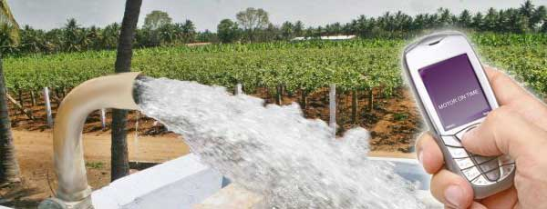
AUTOMATIC WATER PUMP CONTROLLER WITH STARTERS
The automatic water pump controller with starters helps you to turn on and off the water pump remotely through send send sms from your cellphone.
More Info -
AUTOMATIC WATER PUMP DRIP IRRIGATION SYSTEM
For effective water management with Drip Irrigation we have come up with advance technology to assist farmers with our Automatic Water Drip Irrigation System.
More Info
Solar Powered Machinery
-
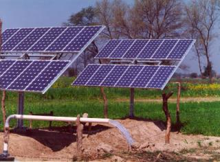
Solar Powered Water Pump
The Solar powered pump is water pumping devise, which uses solar energy to pump water from a bore well during the day and offers an option to store water in an over head tank for use as and when required. It is an environmentally friendly technology.
More Info
Sprayers
-
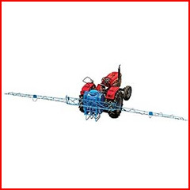
Tractamount Boom Sprayer (HTT-30)
It is suitable for tall crops in rows like cotton, arahar, and maize easy reach from driver seat.
More Info -
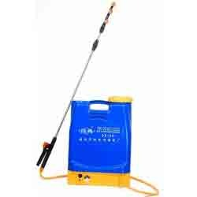
Electric Sprayers
These Electric Sprayers provides easy operation and widely used in agriculture field for control pest.
More Info -
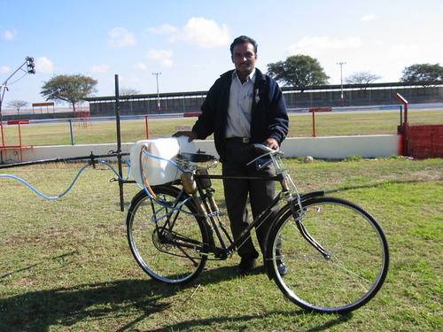
Bicycle Sprayer
It is an attachment, which essentially uses the circular motions of the cycle sprocket to move the piston of the spray pump which generates pressure to spray the pesticides.
More Info -
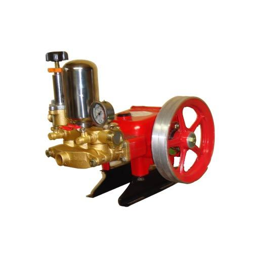
HTP Power Sprayers
Suitable for Large Spraying Operations in Orchards, Coffee & Rubber Plantation & Irrigation.
More Info -
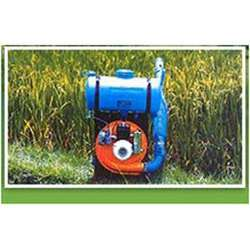
Power Sprayer Cum Duster
This kind of agricultural equipment is powered by a two stroke ic-engine of 34cc capacity.
More Info -
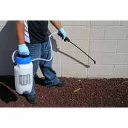
Power Sprayer Cum Duster
These products are quality tested on different parameters and ensure defect free work for longer period of time.
More Info -
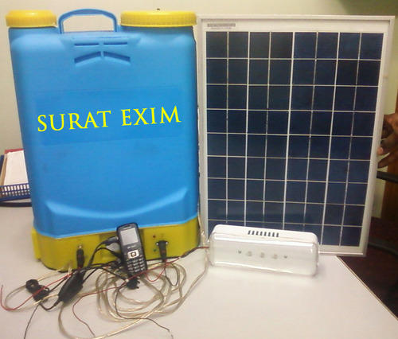
Solar Agriculture Sprayer
" Solar Agriculture Sprayer" which operate on solar Power. this is very useful in agriculture field.
More Info -
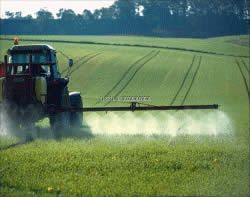
Tractor Sprayer
" These tractor sprayers are fast and efficient machineries that provide even and direct spraying of water, pesticides, fertilizers and many other liquids.
More Info -
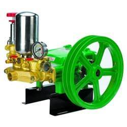
Three Piston HTP Power Sprayer
These tractor sprayers are fast and efficient machineries that provide even and direct spraying of water, pesticides, fertilizers and many other liquids.
More Info -
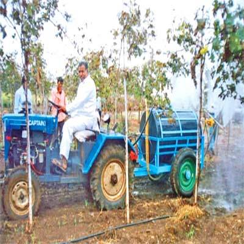
Grapes Sprayer
These sprayers are known for their efficient functioning and left minimal chances of wastage.
More Info -
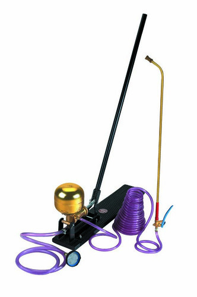
Gator Rocking Sprayer
ASPEE GATOR rocking sprayer with 2 meter long suction hose with strainer, 5 meter long delivery hose, with Hyjet spray gun/VM3ND spray lance
More Info
Miscellaneous Machinery
-
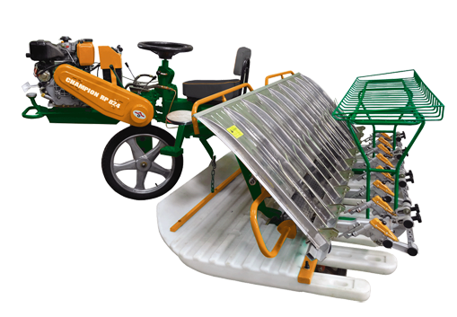
Rice Transplanter
8 row transplanter's hydraulic power pack help to elevate when stuck in field and it is also usefull for easy ridge crossing.There are 4 position for adjusting the seedling distance .
More Info -
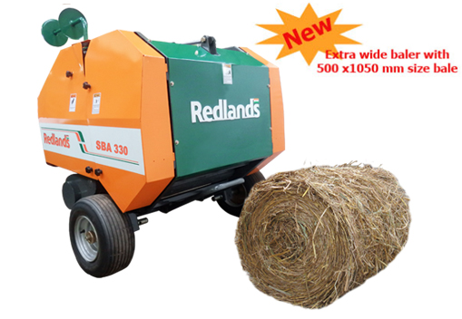
Round Straw Baler
Tractor attached baler compresses the 'cut-straw' into compact bales that is easy to handle, transport, and store.
More Info